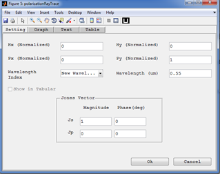
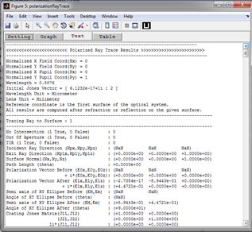

Polarization Ray Trace

Purpose:
To see the real polarization ray trace results for single ray.
Setting:
Settings |
Description |
Remarks |
Hx(Normalized) ,Hy(Normalized) |
Normalized values for field coordinates/angles in the object space. |
Valid values [-1,1] |
Px(Normalized) ,Py(Normalized) |
Normalized values for pupil coordinates at the entrance pupil. |
Valid values [-1,1] |
Wavelength Index |
Index of the wavelength value for the ray. |
A single index should be selected. But new wavelengths can also be used. |
Wavelength |
The wavelength to be used for the ray trace in micrometer. |
If "New Wavelength" is selected for a wavelength index, the new wavelength should be specified here in micrometer. |
Jones Vector |
Defines the initial polarization vector of the ray. It is given in s-p-k coordinate system which is not the same as the global x-y-z coordinate in many cases. |
The phase values of Jones vector are always given in degrees. |
Created with the Personal Edition of HelpNDoc: Easily create EBooks